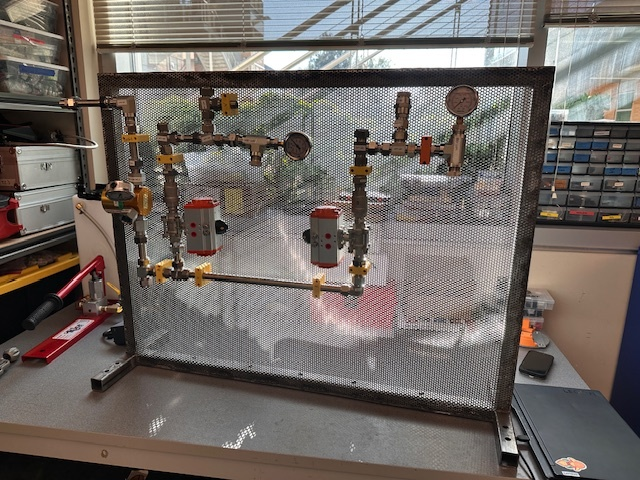
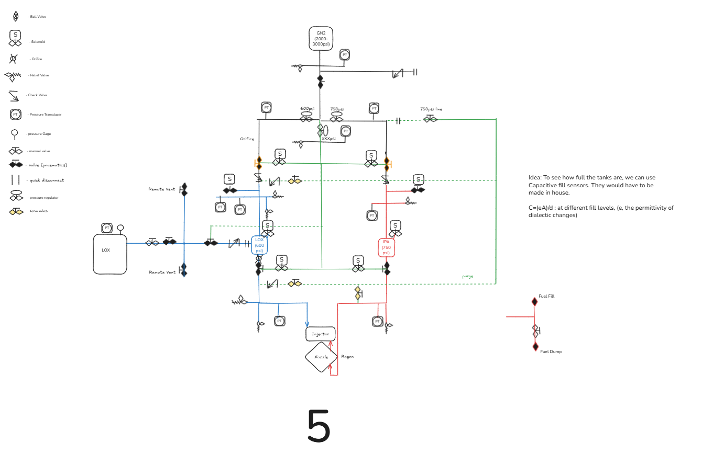
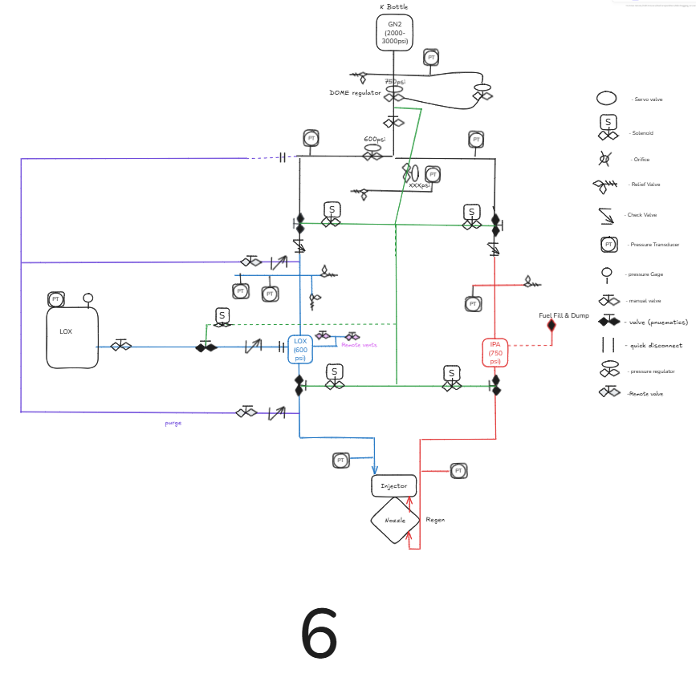
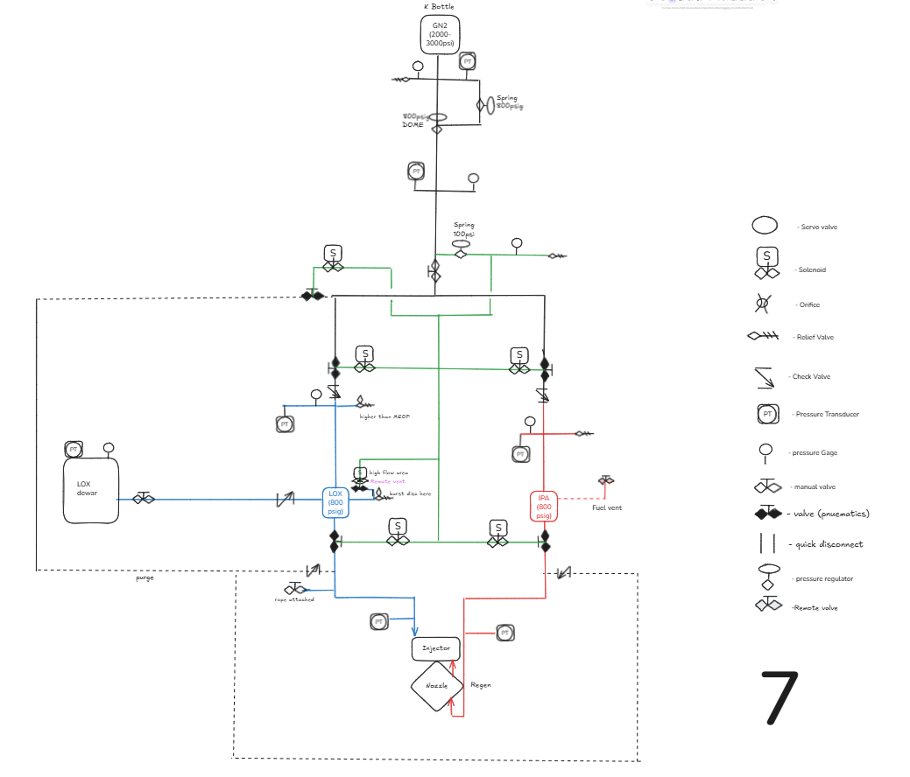
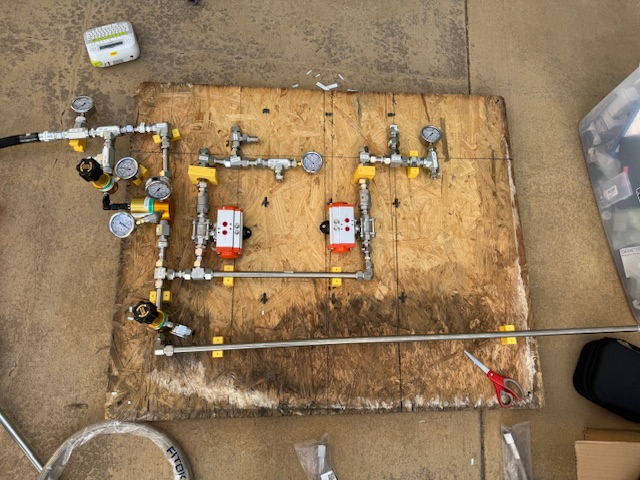

Project Clementine
LOX / Ethanol Liquid Bipropellant Rocket
- Role
- Vice President; previously Lead Fluid Systems Engineer
- Organization
- Highlander Space Program, UC Riverside
- Period
- 2026 - Present
- Tag
- FS-03

The problem
Our previous vehicle, Project Poseidon, used nitrous oxide, which is self-pressurizing: the propellant supplies its own tank pressure through its vapor pressure, so there is no separate pressurization system to design. Moving to liquid oxygen removes that convenience. LOX has to be pushed, which means the whole pressurization architecture becomes something I had to design rather than inherit.
I led the P&ID and did the bulk of the design myself, with the wider fluids team contributing as the work came together. I sized the lines, calculated the pressure drops, and made sure the system delivered pressure and flow where they needed to go. I selected the pneumatics, valves, and regulators, set the pressure schedule, defined the interfaces between the pressurization, propellant, and ignition subsystems, presented the updates to the team every week, and installed the result on our fluids test wall. The P&ID itself belongs to Highlander Space Program.
Constraints
- Single pressurant source. One GN2 bottle had to serve both the pneumatic actuation and the propellant tanks. Budget did not allow separate supplies.
- Cryogenic propellant. LOX introduces material compatibility, thermal, and trapped volume hazards that a room-temperature system does not have.
- Student build. Commercial off-the-shelf components, limited machining, and a team where members rotate in and need to operate the system safely without deep context.
- Every test is a hazardous operation. The system had to be safe to operate and legible to a new operator, not just correct on paper.
Design decisions
Holding tank pressure constant as the bottle drains
A single GN2 bottle blows down as gas is consumed. Treating the bottle as ideal gas,
supply pressure falls continuously through a test. A single spring regulator tracks that decay: spring regulators exhibit droop, where outlet pressure falls as inlet pressure drops and as flow increases, because the spring force is fixed while the sensing area sees changing conditions.
Inconsistent tank pressure means inconsistent chamber pressure, which means the engine is not being tested at the condition it was designed for.
My solution was a two-stage regulation scheme: a spring regulator sets the reference pressure in the dome of a dome-loaded regulator. The dome regulator references that near-constant dome pressure across a large diaphragm area rather than a spring, so its outlet stays essentially flat as the bottle decays and as flow varies. The spring regulator only has to hold a low-flow reference, which is the job it does well.
Sizing the pressurant lines
During checkout I measured a pressure drop across the GN2 lines that was larger than the budget allowed. Rather than raise the supply pressure to compensate, I traced it to undersized tubing and corrected the geometry.
The reasoning is the Darcy-Weisbach relation for major losses,
with the flow velocity set by continuity,
Substituting velocity into the pressure drop shows why line diameter dominates:
At fixed volumetric flow, pressure drop scales with the inverse fifth power of internal diameter. Going up a single tube size is worth far more than any amount of tuning elsewhere in the run, and it fixes the problem at its source instead of masking it with higher supply pressure. Upsizing the GN2 lines brought the drop back inside budget.
Fittings, valves, and bends were then added as minor losses,
with the friction factor from the Reynolds number,
Relief valves on every isolable section
Any volume that can be closed off at both ends by ball valves can trap fluid. With a cryogenic system this is not a theoretical concern: trapped liquid oxygen warming toward ambient expands by roughly a factor of 860 from liquid to gas, and in a rigid closed volume that becomes a pressure rise that will find the weakest component.
I walked the P&ID section by section, identified every volume that could be isolated between two valves, and placed a relief valve on each one. The rule I designed to was that no operator sequence, correct or incorrect, should be able to create a sealed volume with no path to relieve.
Instrumentation at every node
Each measurement point carries both a mechanical pressure gauge and a pressure transducer. This is deliberate redundancy with two different failure modes:
- The transducer feeds the DAQ, giving a continuous recorded trace for post-test analysis and live monitoring.
- The gauge is independent of power and software. An operator can confirm the state of the system by eye during a walkdown, and a disagreement between gauge and transducer immediately separates an instrumentation fault from a real fluid anomaly.
That distinction matters during a no-go: knowing whether the sensor is lying or the system is genuinely off-nominal determines whether you safe the stand or keep working.
Igniter propellant split
The tanks divert a small portion of fuel and oxidizer to a torch igniter that lights the main combustion chamber. Sizing that bleed is an orifice problem,
The split has to deliver a reliable igniter flow without meaningfully disturbing the pressure or flow delivered to the main injector.
What I built
A complete pressurization, propellant, and ignition fluid system: GN2 supply feeding both pneumatic actuation and tank pressurization through two-stage regulation, run tanks for fuel and oxidizer, poppet pneumatic valve actuation, a torch igniter feed, relief protection on every isolable section, and instrumentation at each node reporting to the DAQ. The system is installed on our fluids test wall and is the stand the team now tests on.
Validation
- Component bench testing before integration, to confirm each regulator, valve, and transducer behaved as specified rather than as assumed.
- System pressure checks using the installed transducers, comparing measured drops against the values predicted by the sizing model.
- Correction and re-test: the GN2 line pressure drop was identified here, corrected by upsizing, and confirmed against the model.
What I would do differently
I would build the pressure drop budget before selecting tubing rather than confirming it during checkout. The physics was not a surprise; I had the sizing tool that computes it. Running the numbers first would have caught the undersized run on paper and saved a rework cycle on hardware. It is the clearest lesson I have taken from this system: analysis is cheapest before you buy the fittings.




- P&ID architecture
- Cryogenic fluid systems
- Pneumatics and regulators
- Instrumentation and DAQ
- Hazard analysis